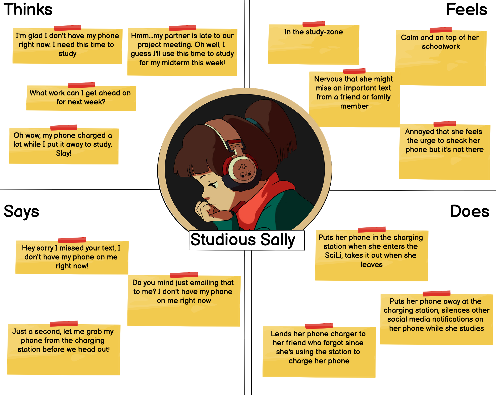

Truthfully, we are all forgetful Fred sometimes. Forgetful fred is a mix of traits, namely
that he tends to forget to charge his phone at night and leaves his spare charger with friends.
He uses the charging station when his phone is out of battery and he has no way other way of contacting
others. He tends to come to the charging station not by choice, but out of necessity. He will stay to use the charging
station until his phone charges and leave, unlike other users who will stay in the SciLi and study while using the interface.
Studious Sally

Studious Sally is as put together as we wish we could all be. She uses the charging station to
help her buckle down and grind during her SciLi study sessions, not because her phone is necessarily
out of battery. Sometimes, she gets nervous that she's going to miss important messages because her phone
is out of reach, but she knows that she'll be able to reach out to people when she periodically checks her phone
out of the charging station just to keep updated.